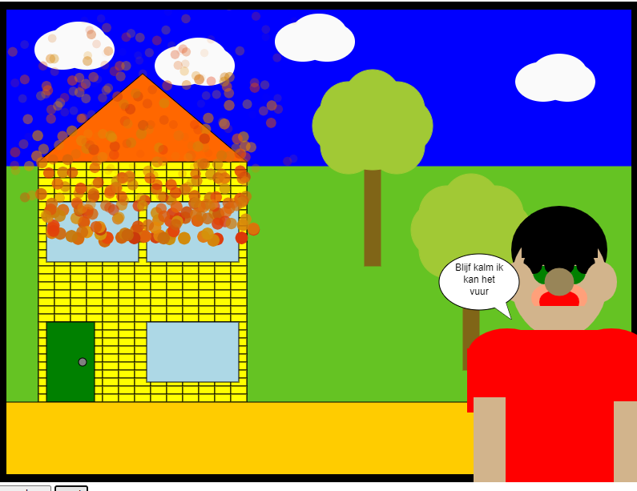
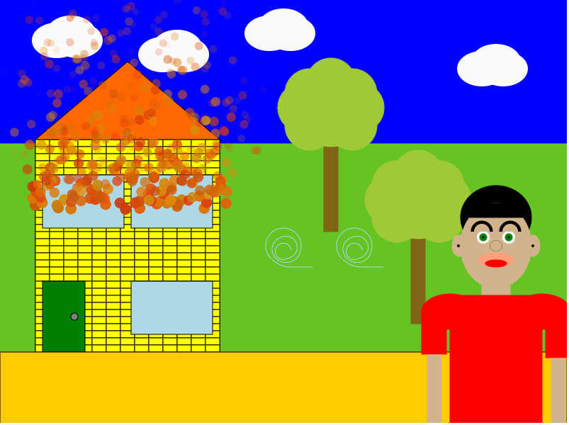
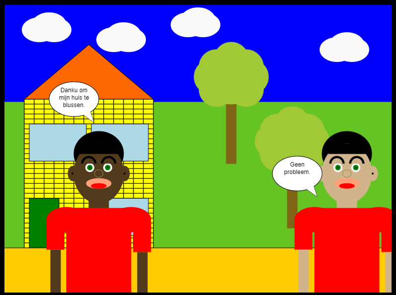
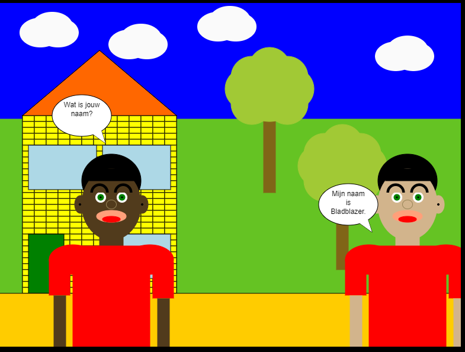

In de eerste slide was ik begonnen met de achtergrond te maken daarna had ik het huis gemaakt. Vervolgens heb ik het mannetje gemaakt en daarna de bomen en de wolken.
In deze slide heb ik het mannetje meer naar voren gezet zodat het lijk dat die dichter bij is gekomen. Maar voor één of andere reden is het gezicht van het mannetje door elkaar.
In deze slide is het gezicht terug normaal. En Hij blaast het vuur uit.
In deze slide heb ik de zelfde persoon gebruikt maar dan met een andere huidskleur.
In deze slide vraagt de ene persoon de naam van de andere. In elke slide is dezelfde achtergrond gebruikt alleen de voorgrond veranderde.